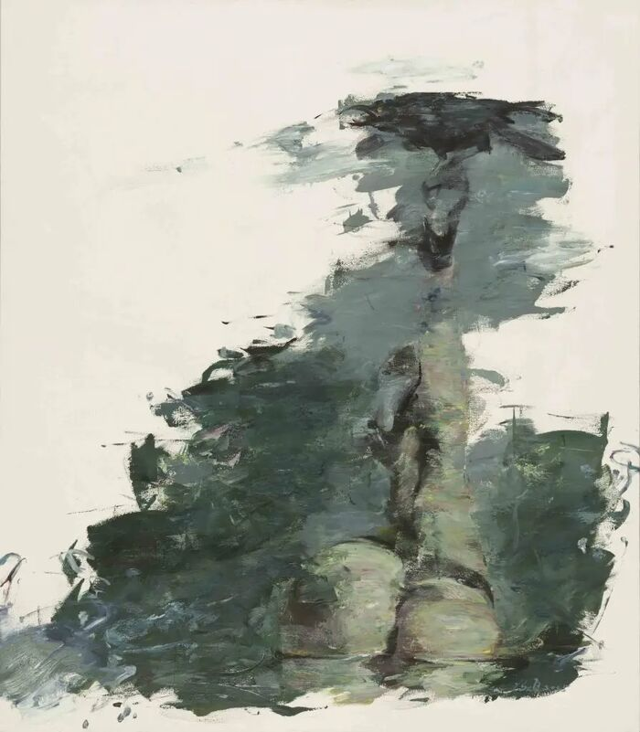
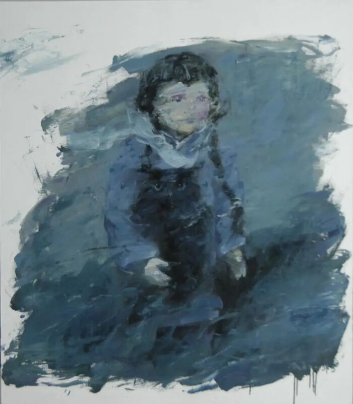
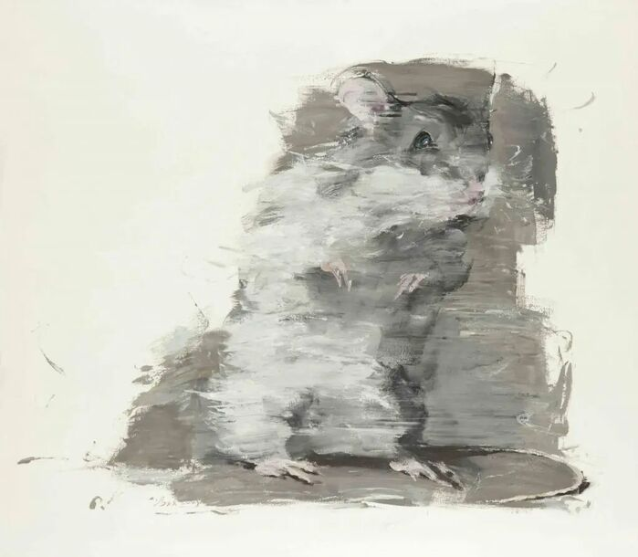
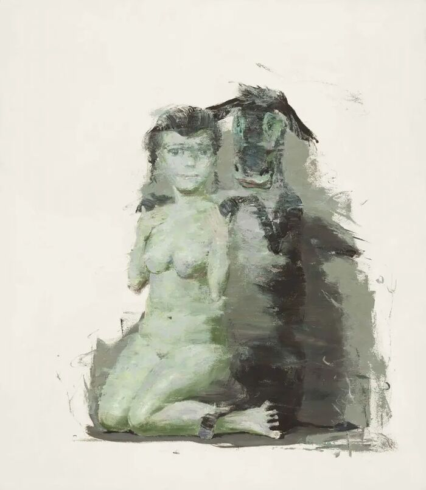
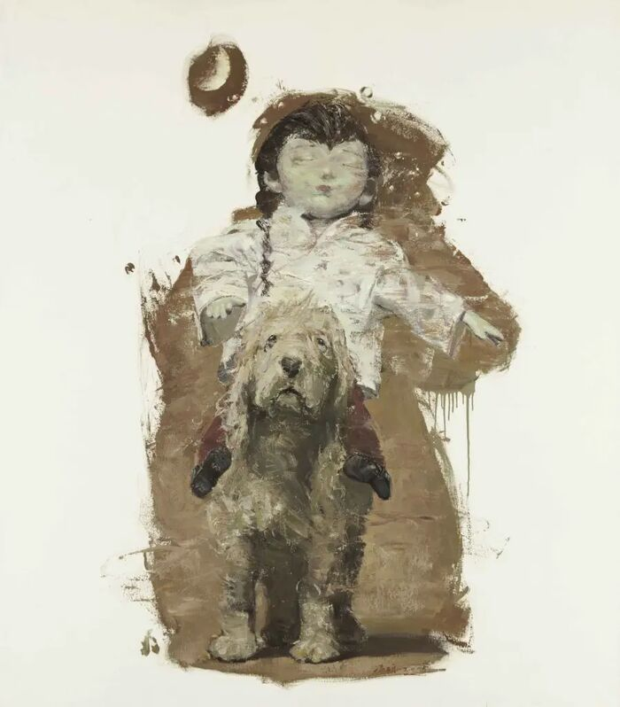

冯硕
Feng Shuo
作品
Works
展览
Exhibitions
艺术家
Artist
中
/
EN
冯硕
作品
Works
展览
Exhibitions
艺术家
Artist
b. 1970 Beijing · 中央美术学院 1994
作品
Works
/
2005

末日 · Doomsday
末日
Doomsday
155 × 135 cm · 2005
年份
Year
2005
尺寸
Dimensions
155 × 135 cm
材质
Medium
布面油画
Oil on canvas
编号
Ref.
FS-110
一往而深
Depths of Feelings
fill="none" stroke="currentColor" stroke-width="1.5" stroke-linecap="round" stroke-linejoin="round"
活着
2005
同年作品
Same year
01

一往而深
Depths of Feelings
155 × 135 cm · 2005
02

活着
To Live
135 × 155 cm · 2005
03

无意伤害
Unintentional Harm
155 × 135 cm · 2005
04

梦断
Broken Dream
155 × 135 cm · 2005